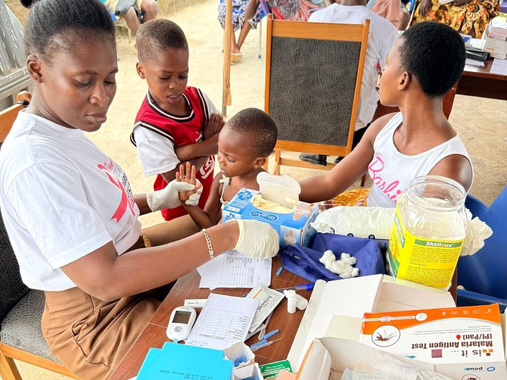

Healthcare outreach
Our flagship program brings free health screening, treatment, and health education directly to underserved communities — including the people of Anomabo in the Mfantseman Municipality. We also run free National Health Insurance (NHIS) registration drives, such as the December 2022 exercise that registered the people of Eduafo, Jedu, and Abura Nkwanta, giving families lasting access to care.